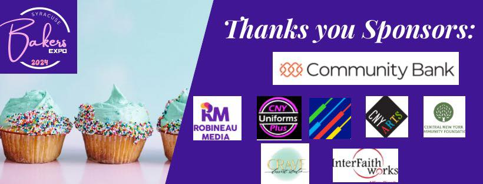
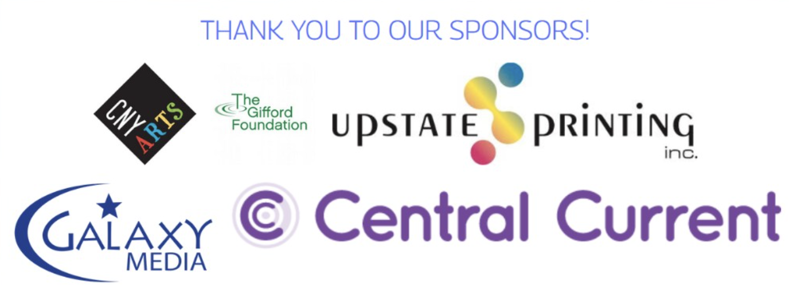

2024 Sponsor Circle
Cupcake showcases, youth baking demos, and marketplace scholarships were powered by the generosity of these partners who invested in the 2024 Expo.

2023 Sponsor Circle
Our return to in-person celebrations came to life thanks to Syracuse storytellers, printers, broadcasters, and arts champions.

Impact in the Community
- Kids' baking showcases where students learned piping, plating, and safe kitchen skills
- Scholarship stipends for vendors rebuilding after the pandemic
- Inclusive tasting events connecting families, seniors, and service organizations
Each past sponsor helped sustain these programs and proved how valuable it is to invest in creative entrepreneurship across Syracuse's neighborhoods.
Ready to Join the Story?
Become part of the next chapter by funding hands-on learning, allowing bakers to test new products, and showing young chefs that their ideas matter. We craft tailored sponsor packages for corporations, small businesses, foundations, and community groups.